出村前六件事
新角色行囊起初是空的。攻略勾選只記錄閱讀進度，不會改動遊戲存檔。
STARWATCH · OFFICIAL FIELD GUIDE
紙境冒險：星燈守望
官方圖文攻略手冊
版本核對：2026-11-01。全地圖採紙片輪廓與折紙特效；本手冊的地圖仍為資料圖解。主線章節含劇情資訊，機關解答可自行展開。
從出發準備開始 ↓01 · 出發之前
這是三章的自由探索 RPG。先以手札追主線，再安排想幫助的人與想回訪的地區。
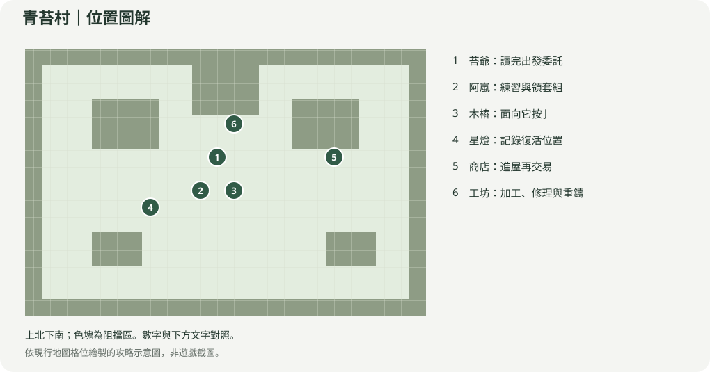
新角色行囊起初是空的。攻略勾選只記錄閱讀進度，不會改動遊戲存檔。
02 · 隨身備忘
| 按鍵 | 用途 |
|---|---|
| WASD／方向鍵 | 移動；也可點地面尋路 |
| 空白／E／Enter | 調查、交談、推進對話 |
| J | 攻擊／割草；可按住連續揮劍 |
| K／Shift | 衝刺，消耗體力 |
| L | 按住防禦；習得後可映光防禦 |
| H | 習得後按住蓄力，放開出招 |
| U／I／O | 火花／癒光／雷光；需先習得 |
| 1／2／3 | 使用快捷欄指定的補給 |
| Z／X／C／V | 背包／手札／地圖／夥伴；同鍵可關閉 |
| Esc | 暫停與設定 |
左下方向鍵移動；右下揮劍、衝刺、互動。防禦與法術使用畫面按鈕。走到門口或出口會自動切換地圖，交易則要走近屋內商人再互動。
保留自動存檔、三個手動欄位及 JSON 匯出／匯入。進度存在當前瀏覽器；換電腦或瀏覽器前先匯出。星燈設定倒下後的回歸位置；倒下損失一成金幣，裝備損耗保留。
CHAPTER 01 · Lv.1–10
青苔村的星燈熄滅後，迷路的旅人越來越多。苔爺請你找回散落的星光，而伊娜與露米也各有必須上路的理由。
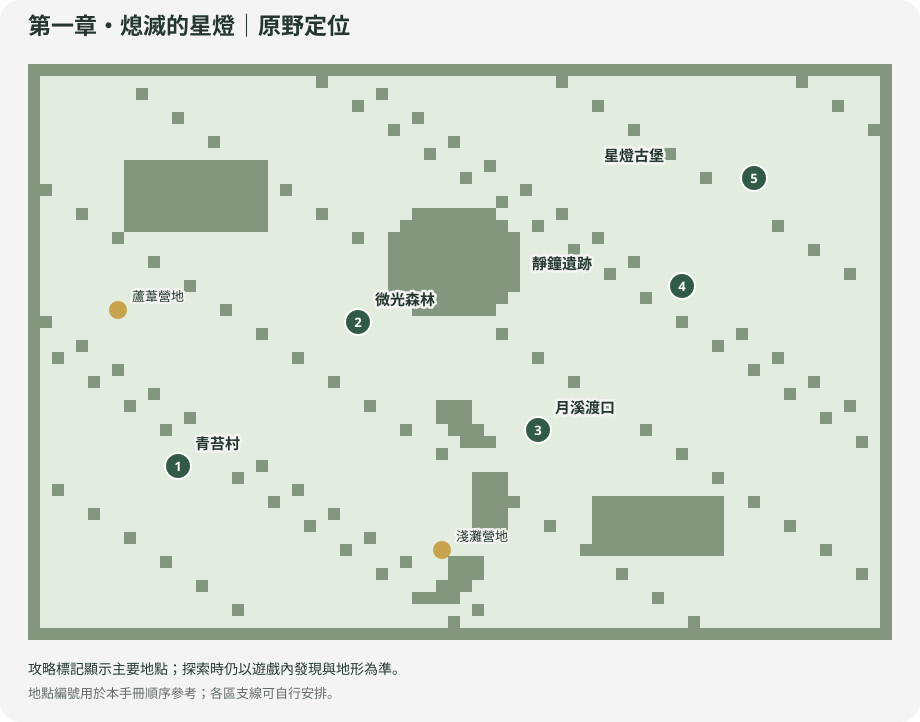
每層先讀旅途手記。需要解答時再展開下方卡片。
兩盞指路燈分別在北方與南方。找回兩枚樹芽，再到東側石臺放回。
先調查北側與南側遺物，再回應東側石臺。先碰東側不會遺失物品，補齊兩處後再調查一次即可。
先聽南風，再看北星，最後回應東側的樹。順序：南、北、東。
依序調查 南 → 北 → 東。選錯會重置這一輪，重新按完整順序即可。
將四件貨物繫上左右升降台；刻度相同時拉下鎖桿，接通東側石路。貨物可取回重放，卸貨鈴能重新擺放。
把重 1 的浮木捆與重 3 的大藥箱放同一台，兩件重 2 的箱子放另一台。四件全放妥後拉鎖桿；左右互換也成立。
石壁刻著三道水紋：北側二格、南側一格、東側零格。反覆調整遺物。
把北／南／東調整為 2／1／0。每調查一次加一格，2 的下一格回到 0；已轉動時，以當前顯示數值為準。
讀完北、南、東三份記錄，通往上層的門就會回應。
讀完北、南、東三處遺物記錄，東側通路便會開啟。
找到北側與南側的影鈴，再交給東側石臺。
先調查北側與南側遺物，再回應東側石臺。先碰東側不會遺失物品，補齊兩處後再調查一次即可。
CHAPTER 02 · Lv.11–20
霧把風鈴港與外海切斷了。漁船停在岸邊，藥草無法送進村莊，人們開始懷疑燈臺的守望者。
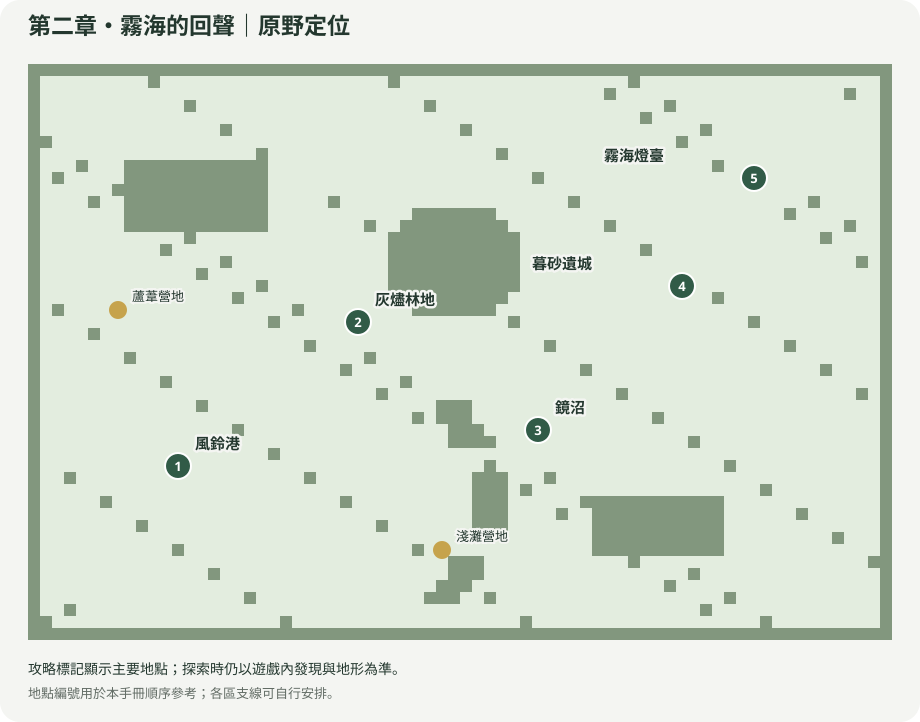
每層先讀旅途手記。需要解答時再展開下方卡片。
讀完三份灰燼手記。
讀完北、南、東三處遺物記錄，東側通路便會開啟。
在西側石碑刻下石像的行動，讓它循灰燼石道推開石塊、守住踏板。沿南側窄道過橋，再轉動另一側的石柄。風鈴可重新開始。
石像初始朝東。依序刻下：前進、前進、左轉、前進、前進、右轉、推石、左轉、前進、右轉、前進、前進。喚醒後等石像到踏板，玩家沿南側窄道過橋，再轉動東側石柄。
擊退守衛，調查東側石臺。
先擊退守住石臺的守衛，再調查北、南、東任一遺物解開本層。若本層有首領，接著擊敗首領，最後調查最東側誓印／核心。
本層首領：灰燼織火者。勝利後記得調查誓印／核心。
收集兩枚名字石，再交到東側。
先調查北側與南側遺物，再回應東側石臺。先碰東側不會遺失物品，補齊兩處後再調查一次即可。
北一格、南二格、東一格；調整三面水鏡。
把北／南／東調整為 1／2／1。每調查一次加一格，2 的下一格回到 0；已轉動時，以當前顯示數值為準。
擊退守衛，讓巡禮之印回應。
先擊退守住石臺的守衛，再調查北、南、東任一遺物解開本層。若本層有首領，接著擊敗首領，最後調查最東側誓印／核心。
本層首領：倒影巡禮者。勝利後記得調查誓印／核心。
找回兩枚商旅印，再到東側市集石臺。
先調查北側與南側遺物，再回應東側石臺。先碰東側不會遺失物品，補齊兩處後再調查一次即可。
聽完被困旅人的請求，作出選擇。
與遺物交談後依心意選擇；兩個選項都能打開通路。此處的光影選擇與村內聯絡人的二選一分歧是不同事件。
擊退守衛，回應城門的誓言。
先擊退守住石臺的守衛，再調查北、南、東任一遺物解開本層。若本層有首領，接著擊敗首領，最後調查最東側誓印／核心。
本層首領：沙鐘守將。勝利後記得調查誓印／核心。
讀完三份守望記錄。
讀完北、南、東三處遺物記錄，東側通路便會開啟。
北、南、東；依次回應三盞星燈。
依序調查 北 → 南 → 東。選錯會重置這一輪，重新按完整順序即可。
擊退守衛，再點亮東側的星燈。
先擊退守住石臺的守衛，再調查北、南、東任一遺物解開本層。若本層有首領，接著擊敗首領，最後調查最東側誓印／核心。
本層首領：霧潮守望者。勝利後記得調查誓印／核心。
CHAPTER 03 · Lv.21–30
晨星要塞仍有燈火，城牆之外卻已聽不見風聲。人們守著最後的航標，等待一個不確定的黎明。
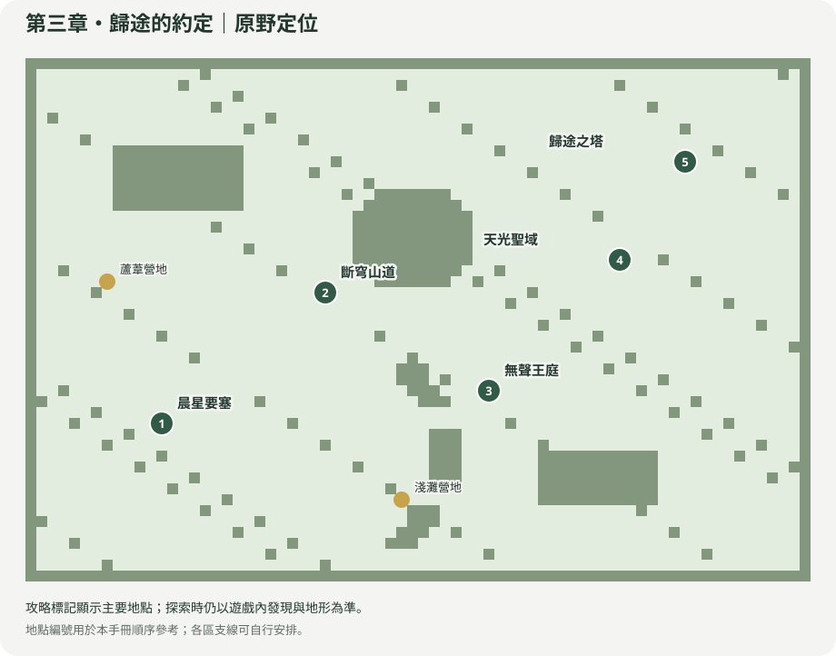
每層先讀旅途手記。需要解答時再展開下方卡片。
找回北側與南側的路標，再帶到東側。
先調查北側與南側遺物，再回應東側石臺。先碰東側不會遺失物品，補齊兩處後再調查一次即可。
南、東、北；依回聲的遠近觸碰路標。
依序調查 南 → 東 → 北。選錯會重置這一輪，重新按完整順序即可。
擊退守衛，調查風之石臺。
先擊退守住石臺的守衛，再調查北、南、東任一遺物解開本層。若本層有首領，接著擊敗首領，最後調查最東側誓印／核心。
本層首領：裂風巨鷲。勝利後記得調查誓印／核心。
閱讀三封王庭的舊信。
讀完北、南、東三處遺物記錄，東側通路便會開啟。
北二格、南零格、東一格；讓三座記憶鏡朝向空席。
把北／南／東調整為 2／0／1。每調查一次加一格，2 的下一格回到 0；已轉動時，以當前顯示數值為準。
擊退守衛，回應記憶石臺。
先擊退守住石臺的守衛，再調查北、南、東任一遺物解開本層。若本層有首領，接著擊敗首領，最後調查最東側誓印／核心。
本層首領：無聲王座。勝利後記得調查誓印／核心。
找齊三枚誓印：日照外環、月映中環、星守內環。外環牽動三環，中環牽動兩環，內環獨轉。對齊後調查中央石盤；歸位石柄可重試。
先取回三枚誓印。從初始環位開始，外環轉兩次、中環轉兩次、內環轉一次；顯示外日／中月／內星後調查中央石盤。若已轉亂，可先用歸位石柄重置環位。
聽完守護者的請求，選擇未來的守護方式。
與遺物交談後依心意選擇；兩個選項都能打開通路。此處的光影選擇與村內聯絡人的二選一分歧是不同事件。
擊退守衛，回應守護石臺。
先擊退守住石臺的守衛，再調查北、南、東任一遺物解開本層。若本層有首領，接著擊敗首領，最後調查最東側誓印／核心。
本層首領：失衡的天秤。勝利後記得調查誓印／核心。
讀完三份守望記錄。
讀完北、南、東三處遺物記錄，東側通路便會開啟。
北、南、東；依次回應三盞星燈。
依序調查 北 → 南 → 東。選錯會重置這一輪，重新按完整順序即可。
擊退守衛，再點亮東側的星燈。
先擊退守住石臺的守衛，再調查北、南、東任一遺物解開本層。若本層有首領，接著擊敗首領，最後調查最東側誓印／核心。
本層首領：吞光之影。勝利後記得調查誓印／核心。
06 · 三章代表機關
一次搬一件，靠近木臺互動放上；空手互動可取回重放。四件全安置、兩台等重後才能拉桿。
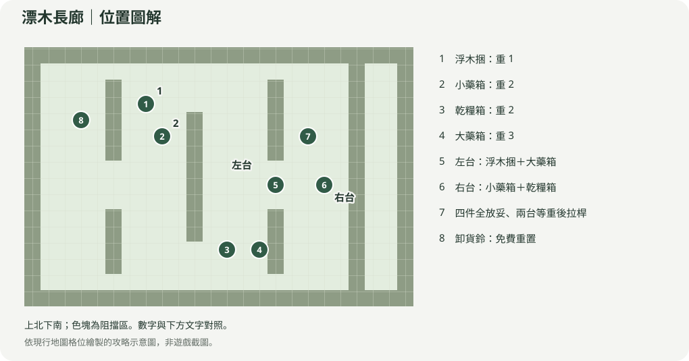
卸貨鈴免費重置。離開或戰敗時，手上貨物回岸；木臺上已放置的保留。舊存檔已解開者維持通行。
玩家走南側窄道，石像走餘燼石道。石碑可放十二枚行動符石，撤回、清空後再喚醒；風鈴可召回重試。
石像初始朝東。走錯會停下，重新安排會回到起點；選單與暫停會停止行動。守住踏板後不能重置關橋，避免回程被截斷。
日紋在西北斷柱旁、月紋在南側石壁、星紋在東北祭壇旁。找回後，分別喚醒外、中、內環柄。
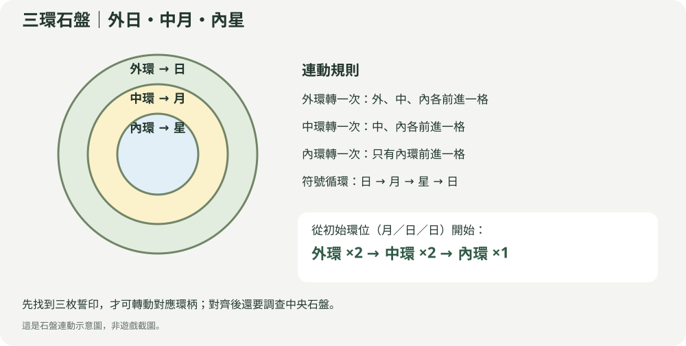
三紋對齊後，還要調查中央石盤。東北舊碑可用提燈讀出額外誓詞，閱讀與否不影響開門。
07 · 同行的約定
青苔村先交談 → 完成根影洞窟 → 擊敗苔根巨靈並開森林星匣 → 回村讀完回報對話。
月溪渡口先交談 → 完成沉水石窟 → 擊敗濁流之主並開溪之星匣 → 回渡口讀完回報對話。
夥伴可跟隨、施法與治療，也會倒下。V 開啟夥伴頁，可選協助戰鬥或節省魔力；倒下狀態不影響已加入的結局資格。
| 按鍵／法術 | 解鎖條件 | 魔力消耗 |
|---|---|---|
| U／火花術 | 伊娜已加入 | 6 |
| I／癒光 | 露米已加入 | 8 |
| O／雷光術 | 已取得林之星片 | 10 |
08 · 野外生存
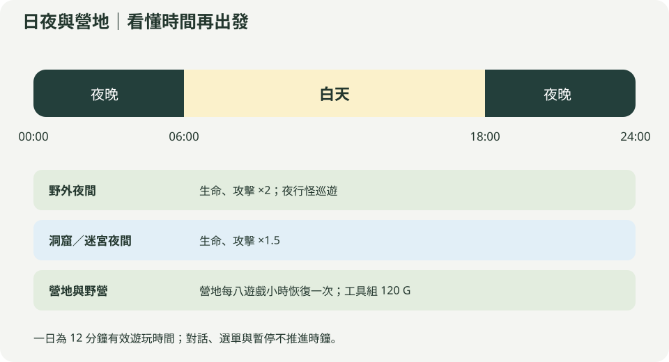
每章兩處恢復營地，各自每八個遊戲小時可恢復 45 生命、15 魔力。夜間圈內安全，怪物仍會在圈外移動，圈內角色也不能向外攻擊。
商店的野營工具組為 120 G；安全處消耗一組休息到清晨六點，恢復隊伍生命、魔力與體力。營地守護圈外，附近普通敵人 300 距離內、首領 500 距離內會拒絕，拒絕不扣道具；不修理裝備耐久。
看到怪物抬手、警戒或蓄力先閃開，等攻擊後空檔再出手。木靈正面較堅固，繞側或用蓄力斬；法術須考慮魔力與敵人弱點。
普通戰鬥提供經驗與金幣；裝備由商店、固定寶箱與工匠取得。清空後同次探索不補怪；離開至少兩分鐘且安寧結束，再回訪才恢復普通怪物。高等級打低等怪的經驗會遞減。
| 地區／樓層 | 首領 | 等級 | 弱點 |
|---|---|---|---|
| 星燈古堡 | 失落的守燈者 | Lv.10 | 無指定元素 |
| 根影洞窟 | 苔根巨靈 | Lv.4 | 火 |
| 沉水石窟 | 濁流之主 | Lv.7 | 雷 |
| 迴音鐘樓 | 迴音鐘靈 | Lv.9 | 光 |
| 織火者的巢 | 灰燼織火者 | Lv.14 | 雷 |
| 無人的巡禮 | 倒影巡禮者 | Lv.17 | 光 |
| 守將的最後一班崗 | 沙鐘守將 | Lv.19 | 火 |
| 風之誓約 | 裂風巨鷲 | Lv.24 | 雷 |
| 王座留下的答案 | 無聲王座 | Lv.26 | 火 |
| 第三份誓約 | 失衡的天秤 | Lv.29 | 光 |
| 霧海燈臺・燈心 | 霧潮守望者 | Lv.20 | 雷 |
| 歸途之塔・燈心 | 吞光之影 | Lv.30 | 光 |
09 · 工具與藏室
| 工具 | 取得位置 | 用途 |
|---|---|---|
| 螢光提燈 | 第 1 章・微光森林西北側 | 照亮沉睡的石門，也能照出水氣裡的足跡 |
| 星索鉤 | 第 2 章・灰燼林地西北側 | 架起斷開的繩橋，也能扣住高處鉤環取回貨物 |
| 山脈手甲 | 第 3 章・斷穹山道西北側 | 推開擋路的巨岩，也能移開淺渠落石、打通山道 |
藏室分成「顯露入口」與「打通內部障礙」兩步。第一類藤蔓用劍割開；第二類水幕沿腳印調查；第三類裂岩用手甲推開。進屋後再依障礙使用工具。
| 章 | 藏室／所在地 | 內部工具 | 額外目標 |
|---|---|---|---|
| 1 | 苔光藏室／微光森林 | 螢光提燈 | 一次性床鋪休息 |
| 1 | 垂藤水窟／月溪渡口 | 星索鉤 | 過橋後依壁畫順序點燈 |
| 1 | 沉鐘石穴／靜鐘遺跡 | 山脈手甲 | 擊退守衛後救回旅人 |
| 2 | 餘燼密窟／灰燼林地 | 螢光提燈 | 一次性床鋪休息 |
| 2 | 月鏡藏室／鏡沼 | 星索鉤 | 過橋後依壁畫順序點燈 |
| 2 | 沙岩寶庫／暮砂遺城 | 山脈手甲 | 擊退守衛後救回旅人 |
| 3 | 風眠石洞／斷穹山道 | 螢光提燈 | 一次性床鋪休息 |
| 3 | 王庭密室／無聲王庭 | 星索鉤 | 過橋後依壁畫順序點燈 |
| 3 | 星光藏室／天光聖域 | 山脈手甲 | 擊退守衛後救回旅人 |
暫時缺工具時，可先推進主線再找領航員回訪。各藏室的寶箱、材料與事件分開互動；材料有時藏在角落，需走近才看得到。
10 · 你留下的改變
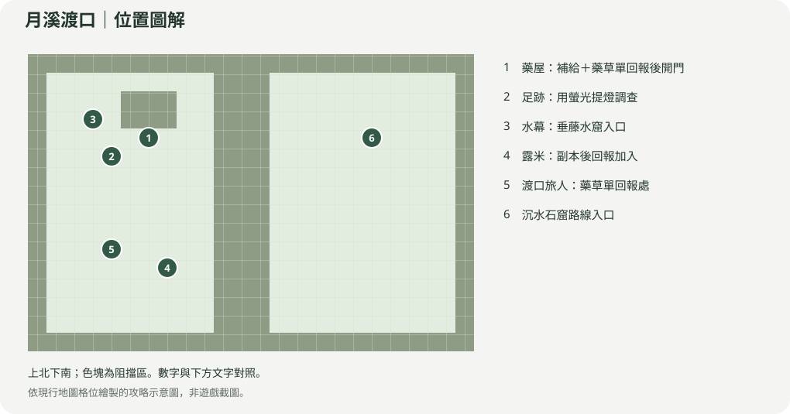
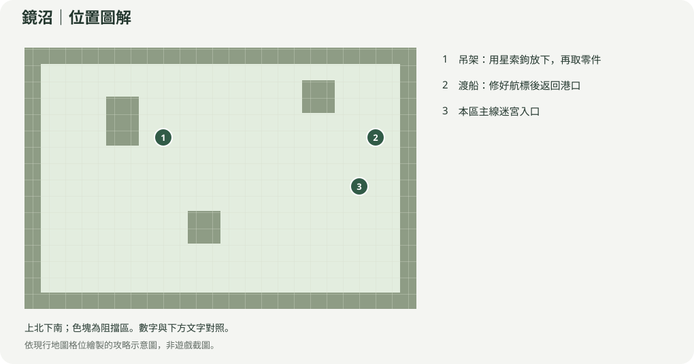
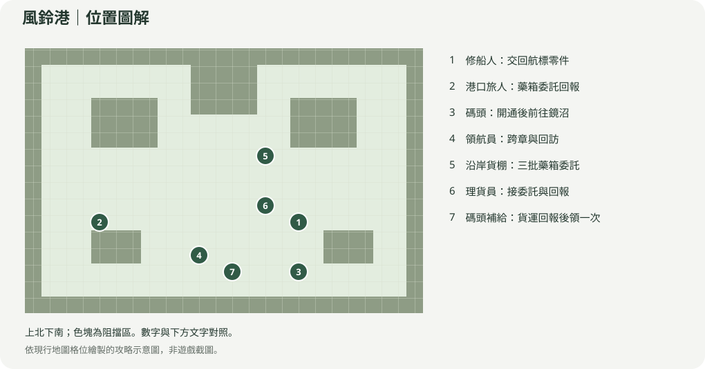
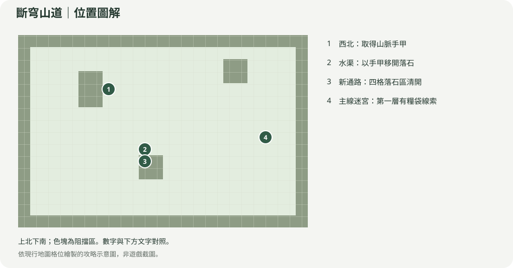
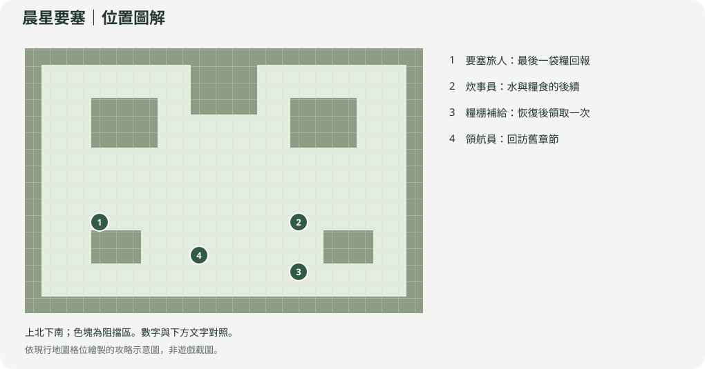
這三段可回訪補做；它們不增加隱藏大結局的門檻。已完成原委託的舊存檔會沿用回報紀錄，舊獎勵不會重發。
第二至三章・守護有人接續
①符石修繕回報後，從餘火迷廊（6,5）庭門進燈庭。靠近（7,10）巡燈臺；（4,10）巡守者接收回報。可逐個動作觀察或看完本次有限巡行，紙模與證明可存讀。
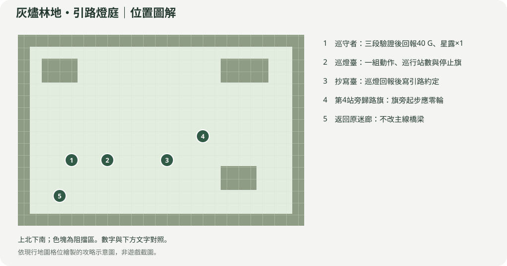
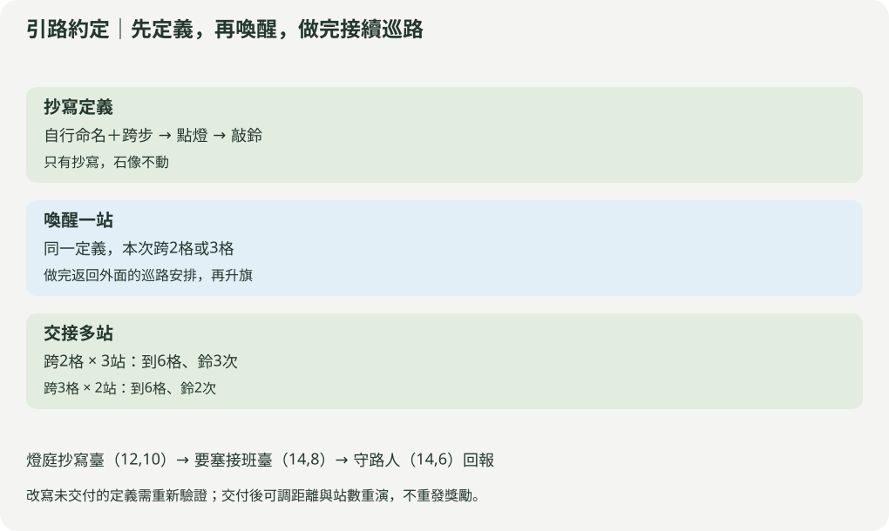
原東岸避風所故事完成後，到航記小屋（4,7）讀寄往84號的信。兩種方法用同一份16頁有序舊冊查找：逐頁16次、折半4次，最後皆明確查無此站。回屋內抄寫人取得新航記，再到東岸避風所旅人身旁聽臨時安置點來歷；一次得20 G、星露×1。原83號任務不重置，沒有要尋找的隱藏鑰匙。
原三批貨向理貨員回報後，進貨棚西南（4,7）。原隊列1、2、4、5已排好，只需接過晚到3號箱、核對左箱、把5與4依次右挪，再核對2並插入。回理貨員領一次15 G、藥水×1，回信更新。可免費重演，原三批貨與獎勵不重置，沒有倒數失敗。
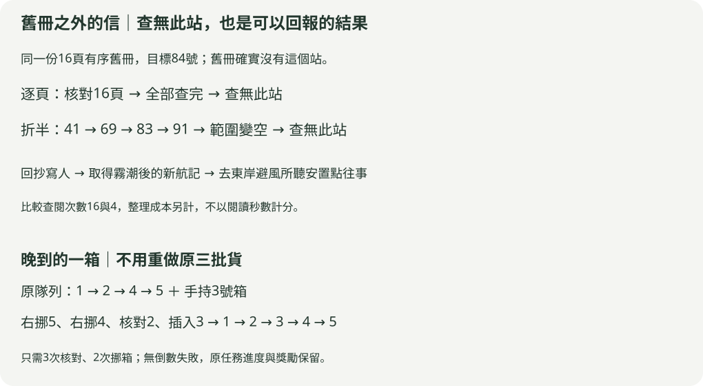
四段均可回訪、無期限，不增加隱藏結局門檻；所有試行免費，報酬各領一次。搜尋資料量翻倍、更多排序排列與任意巢狀約定仍未加入。
第二章・石橋修復後的可選工作角
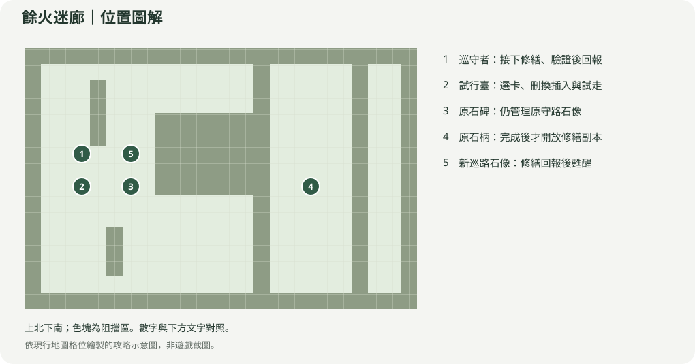
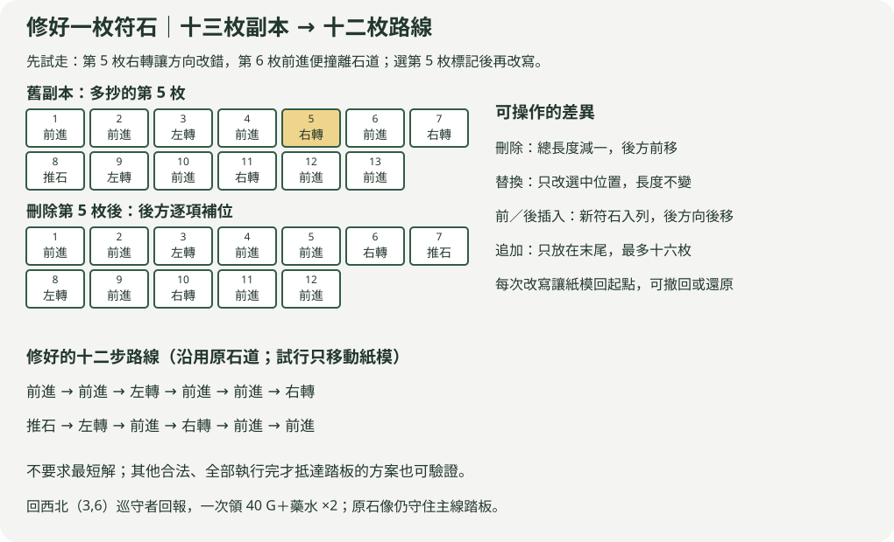
舊副本先前進兩次、左轉、前進到轉角。第5枚「右轉」讓紙模從朝北改為朝東，第6枚前進便離開石道。選第5枚標記，再刪除它，十三枚變為十二枚：前進、前進、左轉、前進、前進、右轉、推石、左轉、前進、右轉、前進、前進。
替換只改該位置而不縮短長度；插入會讓後項向後移。也可改出其他合法方案，不以最短步數或原十二步字面完全相同為門檻。抵達踏板時若還有未執行的尾段，先刪除尾段再驗證。
試行借用紙模與符石，不耗背包、生命或魔力；原石像、風鈴、橋與主線獎勵保留。後續可從（6,5）進引路燈庭完成巡燈，再把命名約定交給第三章接班者，不增加結局門檻。
第一章・藥屋復甦後的可選回訪
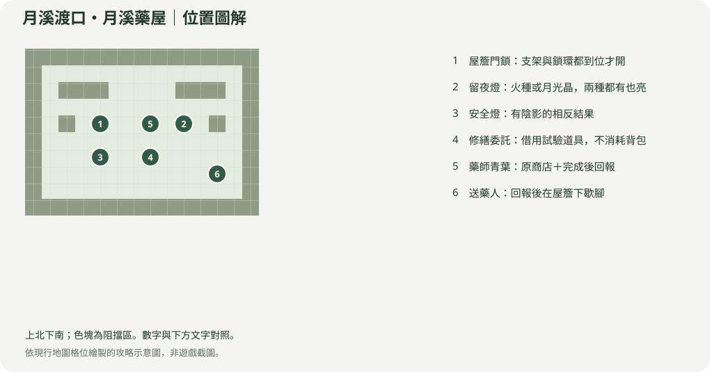
| 裝置 | 測試組合 | 可觀察結果 |
|---|---|---|
| 屋簷門鎖 | 支架／鎖環：無無、有無、無有、有有 | 只有有／有開門；其餘關閉 |
| 留夜燈 | 火種／月光晶：無無、有無、無有、有有 | 只有無／無熄滅；任一或兩種同時放入都亮 |
| 安全燈 | 紙片移出／移入偵測區 | 無陰影時亮，有陰影時熄；原判斷與結果並排顯示 |
測齊 4＋4＋2 種狀態，最後把支架與鎖環都裝上、至少留一種光源、移出陰影紙片。回北側（7,4）藥師青葉，選「回報：無人值守的避雨處」，一次領 20 G 與星露 ×1。
回報後送藥人在東南屋簷下歇腳，青葉與帳本改用完成後對話；原藥水與星露商店保留。可免費重試，謝禮不重發。
安全燈只翻轉小試驗區的判斷，不會移走怪物。這裡不恢復生命與魔力，不改營地各自八個遊戲小時冷卻；無夜戰、時限或隱藏大結局新門檻。
第三章・可回訪的側殿
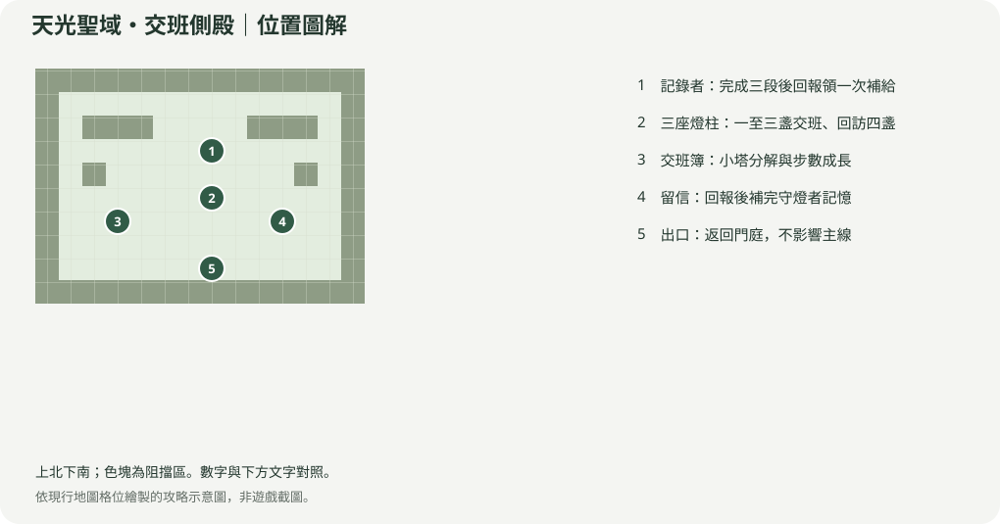
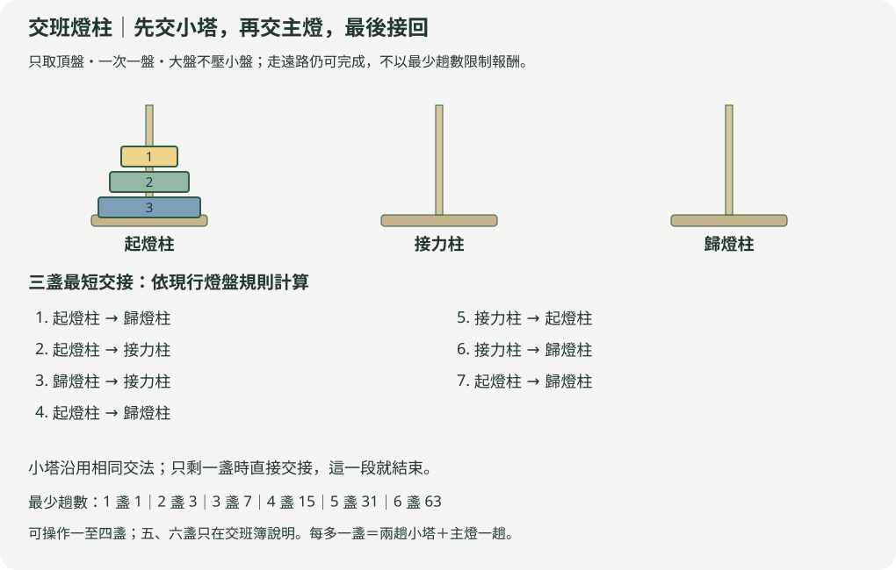
先交接上方小塔，再移最下方主燈，最後用同樣方法接回小塔。小塔逐層變小，只剩一盞便直接搬完並返回上一段。每多一盞，最少趟數是前一層的兩倍再加一：1、3、7、15、31、63。
本支線提供代表性操作與故事，不改原主線三環，也不要求以最少趟數通過。
11 · 沿途的請託
每章找村內聯絡人選救助或調查，選定後本章固定該路線。救助：擊退兩名守衛再交談；調查：閱讀三份線索再整理。完成事件後回村回報，並調查所選場景東南側紀念盒。
| 章／聯絡人 | 救助路線 | 調查路線 | 紀念信物 |
|---|---|---|---|
| 巡林聯絡人・洛禾 | 先救被困的採藥人／林緣避雨所 | 先追查林影的足跡／林緣監視哨 | 林間紀念信物 |
| 港口聯絡人・晴帆 | 先護送診所的藥師／霧岸臨時診所 | 先追查失事補給船／失事船的暗艙 | 霧海紀念信物 |
| 要塞聯絡人・雲衡 | 先疏散山道上的旅人／山道避難站 | 先尋找守燈者的舊記錄／觀星者封存庫 | 晨星紀念信物 |
這十二項是隱藏大結局檢查的委託。居民家書、野外小事件、工具復甦等有各自後續，與此表分開。
| 完成 | 章／委託 | 發放與回報地 | 線索所在 |
|---|---|---|---|
| 1・失蹤的送信人 | 青苔村・有心事的旅人 | 微光森林・遺落的線索 | |
| 1・沒有熄滅的營火 | 微光森林・有心事的旅人 | 失路者的林徑・遺落的線索 | |
| 1・露米的藥草單 | 月溪渡口・有心事的旅人 | 失聲的泉眼・遺落的線索 | |
| 1・未寄出的晚安 | 靜鐘遺跡・有心事的旅人 | 守塔人的書庫・遺落的線索 | |
| 2・送不出去的藥箱 | 風鈴港・有心事的旅人 | 燒焦的邊境・遺落的線索 | |
| 2・老師的第三頁 | 灰燼林地・有心事的旅人 | 餘火迷廊・遺落的線索 | |
| 2・名字與船票 | 鏡沼・有心事的旅人 | 無人的巡禮・遺落的線索 | |
| 2・市集的第一筆交易 | 暮砂遺城・有心事的旅人 | 被沙掩埋的市集・遺落的線索 | |
| 3・最後一袋糧 | 晨星要塞・有心事的旅人 | 最後的運糧路・遺落的線索 | |
| 3・回家的路標 | 斷穹山道・有心事的旅人 | 風之誓約・遺落的線索 | |
| 3・空席上的名字 | 無聲王庭・有心事的旅人 | 沉默的宴席・遺落的線索 | |
| 3・不必獨自守望 | 天光聖域・有心事的旅人 | 守護者的門庭・遺落的線索 |
12 · 整理行囊
武器、身體防具、護符在背包分頁查看與裝備。攻擊、受擊及防禦相關使用會消耗相應裝備耐久；完美防禦仍會有損耗。耐久為零時效果受限，回工坊修理或重鑄。
第一章強化上限 +3、第二章 +6、第三章 +9。工匠加工需要材料、金幣並先與本章工匠交談；做好的裝備仍要在背包裝上。
最高 Lv.30。升級需求遞增，高等級打低等怪經驗遞減；首領前先補好生命、魔力與耐久。
紅葉藥水恢復生命、星露恢復體力與魔力、月露精華補魔、歸途花讓倒下夥伴站起。快捷欄在背包指定，數量為零不會自動換成其他道具。
| 章／工匠 | 裝備 | 材料 | 加工費 |
|---|---|---|---|
| 1・苔爐匠・洛木 | 星芽長劍 | 苔心木 ×2、螢晶碎片 ×1 | 25 G |
| 1・苔爐匠・洛木 | 苔紋護衣 | 苔心木 ×1、守根銅礦 ×2 | 30 G |
| 1・苔爐匠・洛木 | 螢石護符 | 螢晶碎片 ×2、守根銅礦 ×1 | 25 G |
| 2・潮紋匠・汐蘭 | 潮鳴長槍 | 霧銀礦 ×2、潮鏡晶 ×1 | 85 G |
| 2・潮紋匠・汐蘭 | 霧織護衣 | 古紋布 ×2、霧銀礦 ×1 | 95 G |
| 2・潮紋匠・汐蘭 | 潮鏡護符 | 潮鏡晶 ×2、古紋布 ×1 | 80 G |
| 3・星鑄師・嵐恩 | 歸星戰斧 | 晨星礦 ×2、風羽 ×1 | 150 G |
| 3・星鑄師・嵐恩 | 星紋鎧甲 | 晨星礦 ×1、星絲 ×2 | 170 G |
| 3・星鑄師・嵐恩 | 守燈誓符 | 風羽 ×2、星絲 ×1 | 145 G |
| 章 | 材料／數量 | 地圖 | 採集物件 |
|---|---|---|---|
| 1 | 苔心木 ×2 | 苔光藏室 | 泛光的石縫 |
| 1 | 螢晶碎片 ×1 | 苔光藏室 | 角落的舊行囊 |
| 1 | 苔心木 ×1 | 微光森林 | 裂開的倒木 |
| 1 | 螢晶碎片 ×2 | 月溪渡口 | 水岸的暗光 |
| 1 | 守根銅礦 ×2 | 靜鐘遺跡 | 石牆下的包裹 |
| 1 | 守根銅礦 ×1 | 靜鐘遺跡 | 被苔遮住的石縫 |
| 2 | 潮鏡晶 ×2 | 餘燼密窟 | 泛光的石縫 |
| 2 | 霧銀礦 ×1 | 餘燼密窟 | 角落的舊行囊 |
| 2 | 潮鏡晶 ×1 | 灰燼林地 | 裂開的倒木 |
| 2 | 霧銀礦 ×2 | 鏡沼 | 水岸的暗光 |
| 2 | 古紋布 ×2 | 暮砂遺城 | 石牆下的包裹 |
| 2 | 古紋布 ×1 | 暮砂遺城 | 被苔遮住的石縫 |
| 3 | 晨星礦 ×2 | 風眠石洞 | 泛光的石縫 |
| 3 | 風羽 ×1 | 風眠石洞 | 角落的舊行囊 |
| 3 | 晨星礦 ×1 | 斷穹山道 | 裂開的倒木 |
| 3 | 風羽 ×2 | 無聲王庭 | 水岸的暗光 |
| 3 | 星絲 ×2 | 天光聖域 | 石牆下的包裹 |
| 3 | 星絲 ×1 | 天光聖域 | 被苔遮住的石縫 |
走近材料才會顯現；藏室內材料須先打通該藏室通路。固定材料不重複生成。
13 · 星光最後的回應
手札 X → 結局線索會列出缺少的項目。每章救助或調查任選一條即可，不必完成互斥的兩條路。
| 結局 | 條件 |
|---|---|
| 留白的歸途 | 完成三章主線。 |
| 眾人的星燈 | 完成主線＋每章一條分歧已回報＋伊娜與露米已加入。 |
| 星海長明・隱藏大結局 | 完整結局條件＋三份紀念信物＋十二項原支線全部回報。 |
通關後可回訪補取信物與委託，再從手札重溫最新結局；重播不發放獎勵。新加入的藥屋、渡船與糧棚事件不增加結局條件。
14 · 卡關排查
先完成阿嵐的新手準備：聽完苔爺與阿嵐、面向木樁按 J、在阿嵐附近防禦與衝刺、點亮西側星燈，最後回阿嵐讀完領套組對話。
伊娜與露米都需要先交談接下個人故事、擊敗各自副本首領並開星匣，最後回原地讀完回報對話。只有打倒首領還不夠。
回第一章根影洞窟，確認苔根巨靈已擊敗並開過森林星匣；古銅鑰匙與林之星片一起取得。
還要調查首領後方、東側最深處的誓印或核心。首領勝利與取得通關道具是兩個步驟。
藏室入口與內部障礙分開。繩橋需要第二章灰燼林地的星索鉤；可先繼續主線，之後回訪。提燈足跡的新防水藥箱在入口西側，不必先過繩橋。
夜間守護圈仍然有效。恢復生命與魔力有各營地獨立的八個遊戲小時冷卻；滿生命與魔力時不會消耗恢復機會。
本版普通戰鬥獎勵是經驗與金幣，裝備由商店、固定寶箱及工匠加工取得。首領與探索事件另有固定補給，沒有實作隨機裝備掉落。
同次探索不會定時補怪。離開地區至少兩分鐘，且該區安寧時間已結束，再回訪才恢復普通怪物；首領與事件守衛不重生。暫停與離線不累計。
回原地找委託人回報。分歧路線也要回村找聯絡人；只有調查線索或擊退敵人，還不算完成回報。
可以。利用領航員回訪已完成章節，補齊兩位夥伴、每章一條已回報分歧、三份信物及十二項原支線，再到手札的結局線索與重溫結局。
貨棚要先恢復原渡船；航記小屋要把老師第三頁交回原旅人。避風所還需要兩套記錄都找到八十三號站。進度可回訪補做，選錯不會失去貨物。
在設定的「效果」分頁關閉「動態回饋」，會停用角色翻面、行走擺動、受擊彈動、碎紙及畫面震動；保留紙片外觀、傷害數字、敵人預備提示與飛行物，方便判讀戰況。暫停與閱讀對話時，角色動態也會暫停。
對話會顯示目前說話者的紙偶，例如苔爺、阿嵐、伊娜、露米與工匠；信件、告示及章節旁白以星光圖示表示。左側夥伴欄與夥伴頁沿用地圖中的紙偶，並明確顯示暫時倒下；這些圖像不改變加入條件或恢復方式。
第三章天光聖域第一層「守護者的門庭」解開原三環後，西側（7,5）側殿開放。三段交班依序是一、二、三盞；三盞最少七趟，但走遠路也可完成。回北側記錄者領一次補給；回訪三盞、四盞只作重演，沒有重複報酬，也不增加隱藏大結局條件。
門鎖與留夜燈各要按「測試」留下四種組合，安全燈要測兩種。最後支架與鎖環都裝上、至少放一種光源、移出陰影紙片，再回藥師青葉選「回報」。謝禮為 20 G、星露 ×1，領一次；此處不恢復生命與魔力，野外營地仍各自八個遊戲小時冷卻。
先試走十三枚舊副本，選第5枚「右轉」並標記，才開放改寫。選卡後可刪除、替換、前後插入，或追加到末尾；最簡單是刪第5枚，變為原十二步路線。按試走，再逐枚執行或走完整段。到踏板時若尾端還有未執行符石，請刪掉多餘尾段；方案驗證後回（3,6）巡守者領一次40 G、藥水×2。
旗在第4站。每輪先看旗，已在旗旁就執行零輪。故障約定漏了前進，位置一直不變，最多示範六輪便由銅鈴暫停；補回最前面的前進即可繼續。三段完成後找巡守者領一次40 G、星露×1。
寫下名稱與動作不會自動執行，要按喚醒。約定內動作做完會返回巡路安排，最後升旗。跨兩格巡三站會響鈴三次，跨三格巡兩站響兩次。用同一定義完成四項驗證，再找要塞守路人領一次60 G、月露精華×1。
舊冊確實沒有八十四號。逐頁核對16次、折半核對4次後，都能得到查無此站。回抄寫人取得新航記，再去東岸避風所聽臨時安置點的來歷，領一次20 G、星露×1。不必尋找不存在的舊站或鑰匙。
不用。貨棚西南（4,7）把晚到三號箱插入原排好的1、2、4、5之間：右挪5、右挪4，核對2後插入。回理貨員領一次15 G、藥水×1；可免費重演，不重發謝禮。
不會。這裡的勾選只是本瀏覽器的攻略閱讀記錄，與遊戲存檔分開。換瀏覽器或裝置時，遊戲進度仍須在遊戲內匯出／匯入。
可回訪的第二章故事
兩段都是可回訪的支線，未完成仍可繼續三章主線，也不增加隱藏大結局的門檻。貨台與航記的每一步會自動存檔，關閉選單或離開後可繼續。
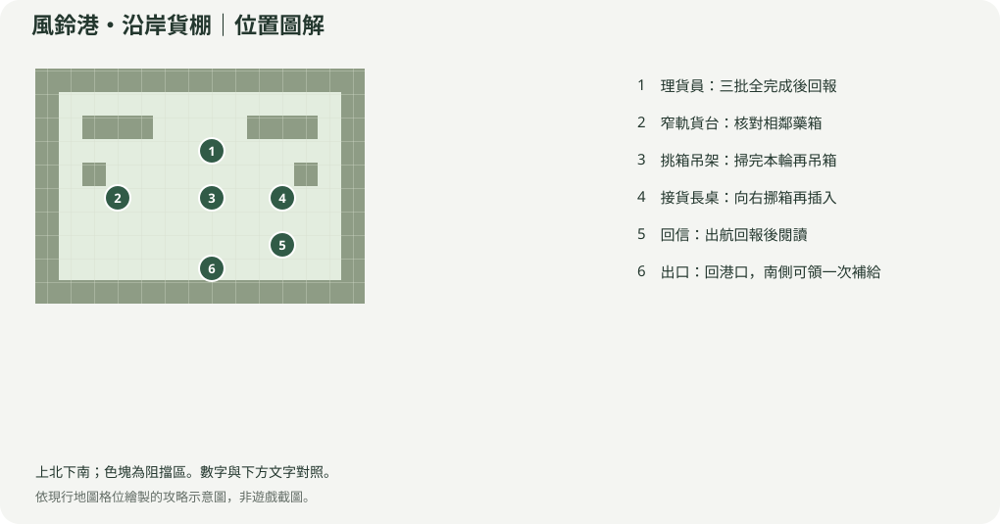
| 設備 | 操作規則 | 本批核對結果 |
|---|---|---|
| 窄軌貨台 | 由左往右核對相鄰兩箱；逆序就交換，否則保持。每輪最後一箱固定。初始 4、2、5、1、3。 | 10 次比較、6 次交換 |
| 挑箱吊架 | 每輪檢查尚未裝妥的全部箱子，保留最小站號；看完才吊到本輪前端。初始 4、2、5、1、3。 | 10 次比較、2 次吊換 |
| 接貨長桌 | 2、5 已排好；依序取下一箱 1、4、3，將前段較大的箱子向右挪，直到能插進空位。 | 7 次比較、5 次向右挪位 |
比較只在「核對」時計一次。搬到一半的手持箱仍保留在貨棚工作進度內；不會遺失，也不占玩家背包。
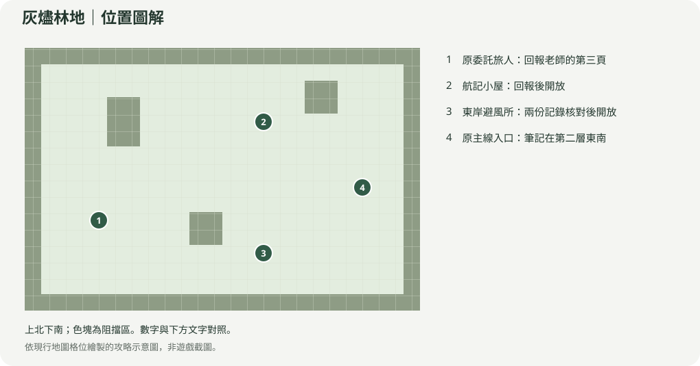
原散頁航記在第 13 頁找到 83 號；有序索引依 41 → 69 → 83 查到目標，共 3 次。
這兩份原記錄順序不同，不能直接當同資料比較。送信人的兩份出發單都使用相同有序資料：逐頁需 14 次，取中間縮範圍需 3 次。只比較查閱次數；十六頁先前整理的成本另計，沒有用閱讀秒數評判。
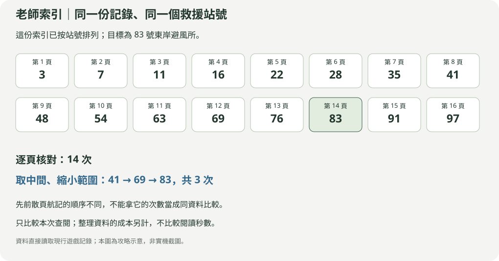
倖存旅人證實，老師封住星脈是為尚未上船的人爭取一夜。避風所保留舊信與燈，接回伊娜理解老師動機的原有故事。